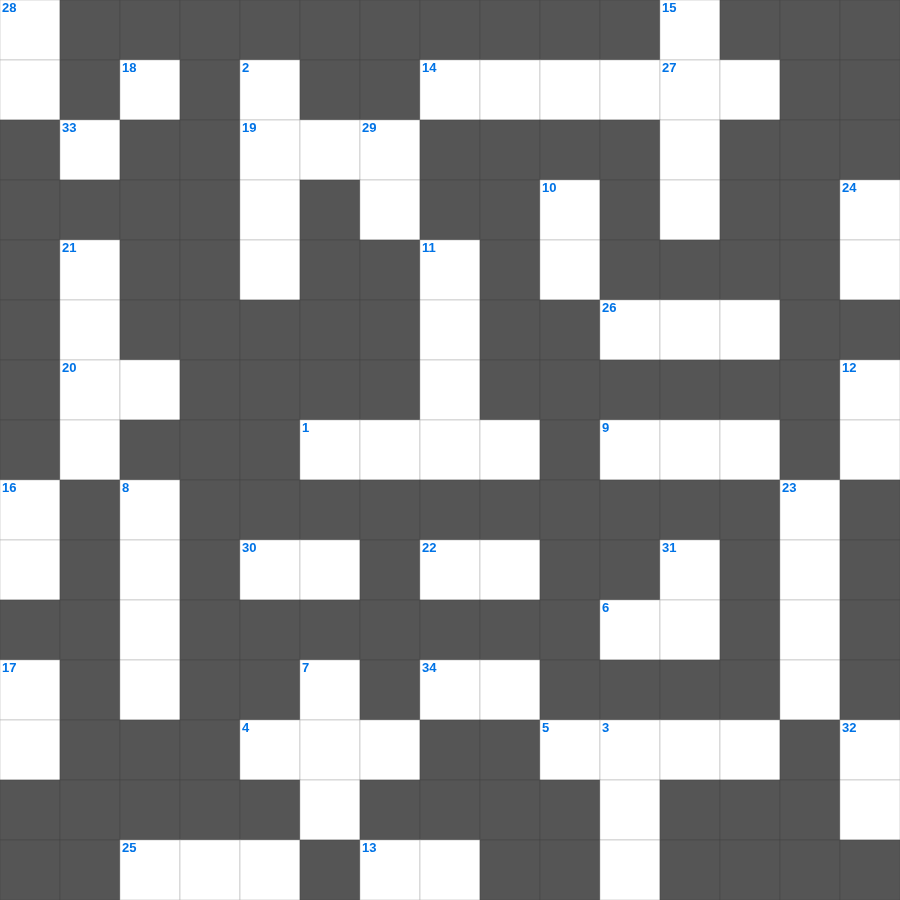

이사야: 고난 받는 종
📌 서비스 정의
십자가로세로는 교회 주보와 주일학교에서 사용할 수 있는 성경 기반 가로세로 퍼즐 서비스입니다. 성경 인물, 사건, 핵심 구절을 바탕으로 제작되었습니다. 온라인 풀이 및 인쇄 기능을 제공합니다.
📖 이사야란?
이사야는 유다 왕국의 멸망 위기 속에서 심판과 회복, 그리고 메시아의 오심을 예언한 책으로, 신약에서 가장 많이 인용되는 예언서 중 하나입니다.
📚 이사야의 주요 사건·주제
이사야의 소명(이사야 6장) · 임마누엘 예언 · 고난받는 종의 노래(이사야 53장) · 바벨론 멸망 예언 · 새 하늘과 새 땅 예언
오늘은 이사야의 주요 내용을 담은 이사야 낱말 퍼즐를 준비했습니다. 총 35개의 힌트가 있으며, 주일학교 교재나 성경공부 자료로 활용하기 좋습니다. 무료로 즐기는 이사야 가로세로 퍼즐을 지금 바로 풀어보세요!

📝 가로 힌트
1. 하나님의 은사와 부르심에는 이것이 없느니라
3. 사자 굴에서도 살아남은 사람
4. 가장 큰 무게 단위(금 한 이것)
5. 예수님을 판 제자
6. 천국은 마치 가루 서 말 속에 넣은 이것과 같으니
9. 예수님의 머리카락이 이것 같다고 묘사됨(계시록)
13. 동방박사들이 별을 보고 찾아와 경배한 날
14. 다윗이 밧세바를 범하고 나단에게 들은 말
19. 모세가 물을 낼 때 사용한 도구
20. 아합 왕이 뺏으려 했던 포도원 주인
22. 영들 분별함과 각종 이것 말함
25. 언약궤를 모셔두는 가장 거룩한 장소
26. 이것 하지 말라(남의 물건을 가져감)
30. 성령의 열매: 충성, 온유, 이것
33. 주의 말씀은 내 발에 이것이요 내 길에 빛이니이다
34. 아브라함이 이삭 대신 드린 제물
📝 세로 힌트
2. 태초에 하나님이 세상을 만드신 일
3. 어린아이가 가져온 보리떡의 개수
7. 바울이 2년 동안 가르쳤던 서원
8. 향유 옥합을 깨뜨려 발을 닦은 것
10. 오직 의인은 이것으로 말미암아 살리라
11. 모세가 홍해를 가르고 마른 땅처럼 건넌 일
12. 반석 위에 지은 집과 이것 위에 지은 집
15. 멜리데 섬에서 바울을 문 동물
16. 좋은 땅에 떨어진 씨앗은 몇 배의 결실?
17. 하나님의 이름을 이것되이 일컫지 말라
18. 우리가 알거니와 하나님을 사랑하는 자 곧 그의 뜻대로 부르심을 입은 자들에게는 모든 것이 협력하여 이것을 이루느니라
21. 비둘기가 물고 온 평화의 상징 잎사귀
23. 노동자 하루 품삯에 해당하는 은화
24. 마음이 가난한 자가 받는 복
27. 이스라엘이 광야에서 보낸 년수
28. 너를 위하여 새긴 이것을 만들지 말고
29. 여호와 이것: 준비하시는 하나님
31. 안식일을 기억하여 이것하게 지키라
32. 성령의 검은 곧 하나님의 이것
🧩 이 퍼즐에서 배우는 내용
이 퍼즐은 이사야: 고난 받는 종의 핵심 단어와 개념을 자연스럽게 복습할 수 있도록 구성되었습니다. 주일학교 수업이나 개인 성경공부에서 학습 내용을 점검하는 용도로 바로 활용할 수 있습니다.
🧑🏫 교회 교육 자료 활용
이 퍼즐은 주일학교 교재 추천 자료로 활용할 수 있고, 주일학교 주보에 넣기 좋은 분량으로 구성되어 있습니다. 수업용 주일학교 교안에 활동지로 붙이거나, 예배 후 복습용 주일학교 공과교재로 바로 사용할 수 있습니다.
🏷️ 키워드
이사야 낱말 퍼즐, 이사야, 십자가로세로, 성경퀴즈, 말씀퀴즈, 가로세로퍼즐, 주일학교 교재 추천, 주일학교 주보, 주일학교 교안, 주일학교 공과교재